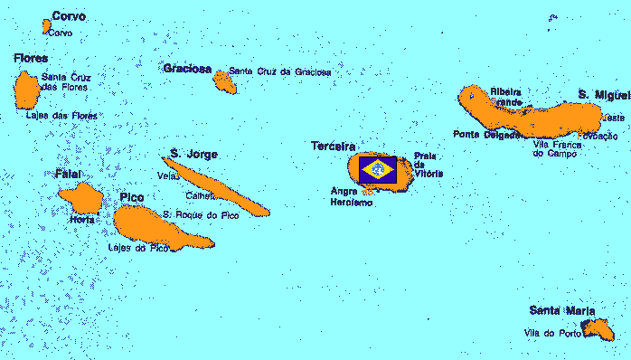

Azores Azores
Atlantic Ocean, Azores Islands Island Fortress Elran Situated strategically between Rio de Janero and Belfast, the Azores Island chain lies far off the coast of Portugal, and has long been a military base of many of Earths empires. The modern military base and airfield lies in the center of the island chain, and it is used to control shipping between South America and the front lines. Although nearly tropical in nature, the small size of the islands removes the possibility of any sort of jungle fighting. Elran One of the highest ranking officers in the Federation, Elran uses his fortress expertly as a link between Belfast and Rio de Janero. A quiet man, he keeps to himself when not on duty, but his impeccable record lets others give him the personal space that he asks for. He is staunch and serious, letting nothing slip by him in the fight against Zeon. The Azores  |